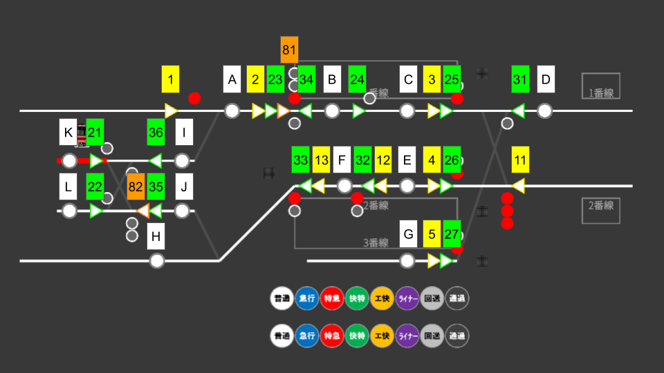
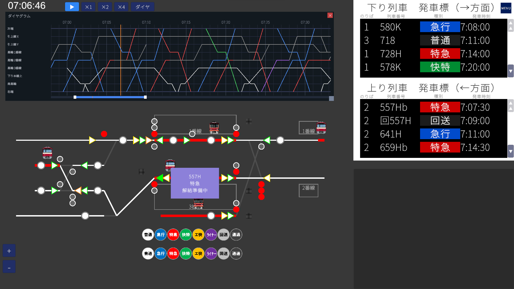
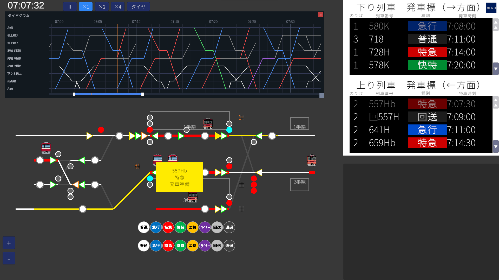
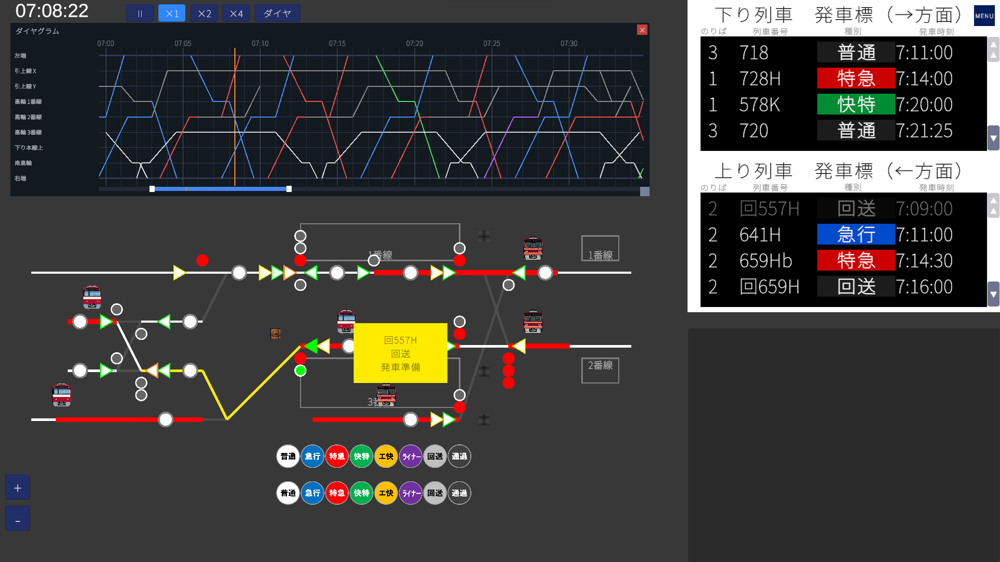
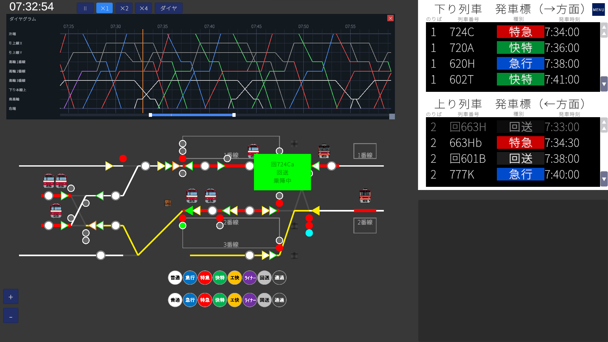
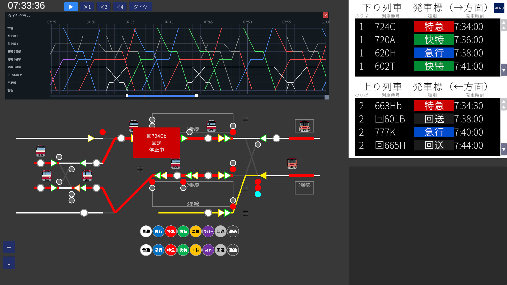
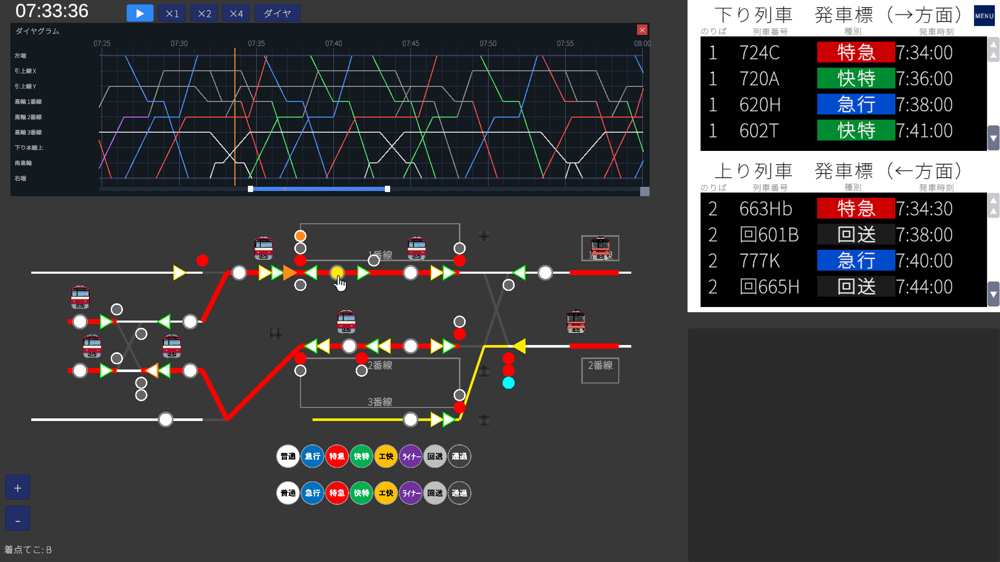
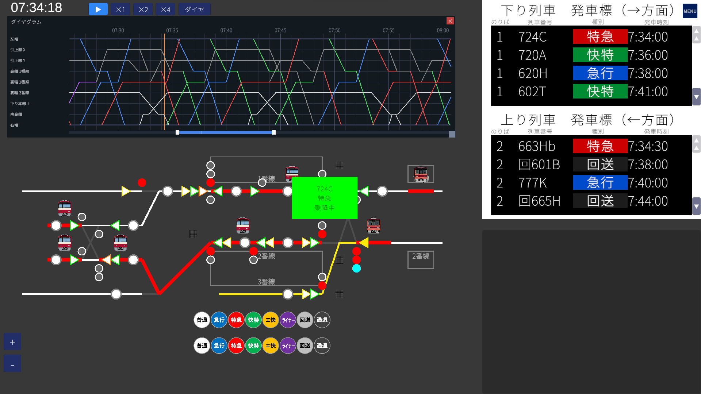

What makes Takanawa unique is its coupling & decoupling and parallel parking operations — brand new in V1.6. You can join a short train to a longer one to form an extended formation, split a long train and send the rear half off as a separate service, or even park two trains nose-to-tail on the same platform. Getting the hang of these mechanics first will make the rest of the scenario much easier to handle.
Learn about coupling, decoupling & parallel parking →🎯 Map Overview
Takanawa is a terminal-style map containing two stations: Takanawa and Minami-Takanawa. Takanawa has Tracks 1–3, Minami-Takanawa has Tracks 1–2, and the side of the yard hosts two pull-back tracks (Pull-back X and Pull-back Y). Turnaround trains, through-running trains, and coupling/decoupling services all share the same yard — making it a step up in difficulty over earlier maps.
- Takanawa: Track 1 / Track 2 / Track 3 (the station where you actually set routes)
- Minami-Takanawa: Track 1 / Track 2. Local services only; trains stop, depart, or pass through automatically without any player input.
- Pull-back tracks: Pull-back X / Pull-back Y (used for turnaround and coupling). On screen, X is the upper track and Y is the lower track.
🗺 Lever Layout

Use the diagram above to see how Start Levers, End Levers, platforms, and pull-back tracks are arranged in the yard.
Start Lever types
| Border color | Purpose | Lever numbers |
|---|---|---|
| Yellow Main line | Routes for revenue trains | 1–5 (rightbound) / 11–13 (leftbound) |
| Green Shunting | Movements into pull-back tracks / turnaround | 21–27 (rightbound) / 31–36 (leftbound) |
| Orange Coupling | Special shunting for joining trains | 81 (rightbound) / 82 (leftbound) |
🔧 Route List
A route is defined by a Start Lever and an End Lever. On top of the usual main-line and shunting categories, the Takanawa map introduces a brand-new third type: Coupling Shunting routes.
Main Line Routes
Routes used by passenger trains between the main line and the station. Start levers light up yellow. On the Takanawa map, some moves require pulling two routes in sequence, so the table lists routes per operation rather than per individual route.
| Operation | Routes (pull in order from left) |
|---|---|
| Down main line → Takanawa Track 1 (entry) | 1A → 2C |
| Takanawa Track 1 → Down main line (departure) | 3D |
| Up main line → Takanawa Track 2 (entry) | 11E → 12F |
| Takanawa Track 2 → Up main line (departure) | 13H |
| Up main line → Takanawa Track 3 (entry, for turnaround) | 11G |
| Takanawa Track 3 → Down main line (turnaround departure) | 5D |
Shunting Routes
Routes for in-yard moves (entering pull-back tracks, turnaround, returning to Track 1). Start levers light up green. As with main-line routes, a single move typically requires pulling several routes in sequence.
| Operation | Routes (pull in order from left) |
|---|---|
| Takanawa Track 2 → Pull-back X | 33J → 35K |
| Takanawa Track 2 → Pull-back Y | 33J → 35L |
| Pull-back X → Takanawa Track 1 | 21A → 23B → 24C |
| Pull-back Y → Takanawa Track 1 | 22A → 23B → 24C |
Coupling Shunting Routes
Start levers light up orange. These are special routes that deliberately enter an occupied track circuit (regular routes refuse to open into an occupied track). Use them to bring an additional train up to a stationary train ready for coupling or parallel parking.
| Route | Start → End | Purpose |
|---|---|---|
| 81B | 81 → B | Rightbound: bring a coupling train up to a train already stopped at Takanawa Track 1 (end-lever B side) |
| 82L | 82 → L | Leftbound: bring a coupling train up to a train already stopped at Pull-back Y (end-lever L side) |
🟧 Coupling, Decoupling & Parallel Parking (Takanawa's flagship operations)
Brand new in V1.6: a single service number can be operated by combining multiple formations into one train. In the morning rush, a 12-car train arrives at Takanawa Track 2 and is split into front 8 + rear 4 — the front 8 cars depart on the up main line, while the rear 4 cars are pulled back into a pull-back track. In the evening it works in reverse: an 8-car train arrives at Takanawa Track 1 from the down main line, and a 4-car train is brought in from the pull-back track and joined to its rear to form a 12-car service, which then departs on the down main line. On top of that, the Takanawa map adds parallel parking — stopping two distinct trains nose-to-tail on the same platform.
Key elements
| Element | Role |
|---|---|
| Orange-bordered levers 81 / 82 | Coupling start levers. They open the "enter occupied track" coupling routes |
| Coupling shunting routes (81B / 82L) | Routes that bring a coupling train up to a track where another train is already standing |
| Coupling shunting signal | A dedicated signal that only goes proceed for coupling routes. Visually distinct from main-line and ordinary shunting signals |
Decoupling sequence
On the Takanawa map, decoupling happens at Takanawa Track 2 or Pull-back X.
-
Bring the target train to its designated stopping position
Bring the train scheduled to decouple to its predetermined stop position. Once stopped, the train automatically enters the decoupling-ready state, and decoupling completes roughly 30 seconds later. Decoupling itself is handled by the game — the player does not need to do anything.
Inputs are ignored during decoupling: pulling routes or pressing departure buttons has no effect. Wait for decoupling to complete before doing anything else.
-
Pull the route for the front half and send it out first
Once split, the front and rear halves each receive a new service number (the original service number is not retained). Send the front half out first. Depending on its onward run, the route you pull may be a main-line route or a shunting route.
- Example — Takanawa Track 2, the front 8 cars depart on the up main line as a Limited Express → 13H
- Example — Takanawa Track 2, the front 4 cars head into a pull-back track as an out-of-service run → 33J
At Takanawa Track 2: after pulling the route, you must press the departure button.
At Pull-back X: no departure button is needed — once the route is open, the train departs automatically at its scheduled time.
-
Send out the remaining rear half
After the front half leaves, the rear half (usually an out-of-service run) remains at the same stopping position. Pull its route the same way; at Takanawa Track 2 press the departure button to send it on, and at Pull-back X the train departs automatically once its scheduled time arrives.

Where decoupling happens (by scenario)
Morning Rush — Decoupling at Takanawa Track 2
-
Rear 4 cars split off:
557H/659H/661H
Front 8 cars (557Hb/659Hb/661Hb) depart first onto the up main line; rear 4 cars (回557H/回659H/回661H) head into Pull-back Y. -
Front 4 cars split off:
663H/665H/667H/669H/671H/673H/775H/777H
Front 4 cars (回◯◯H) head into Pull-back Y; rear 8 cars (◯◯Hb) depart later onto the up main line.
Morning Rush — Decoupling at Pull-back X
回653A(12 cars) → 4 cars (回724Cb) depart first and couple to the rear of724C; 8 cars (回720A) depart later as720A回603B(12 cars) → 4 cars (回724H) depart first and couple to the rear of724H; 8 cars (回722A) depart later as722A
Evening Rush — Decoupling at Takanawa Track 2
-
Rear 4 cars split off:
1833H
Front 8 cars (1833Hb) depart first onto the up main line; rear 4 cars (回1833H) head into Pull-back Y as an out-of-service run.
Coupling sequence
-
Stop the base train at the target track
Bring the base formation into the platform (or pull-back track) using ordinary main-line or shunting routes.

-
Move the additional formation toward it (shunting)
Use ordinary shunting routes to bring the joining formation — usually a short train waiting on a pull-back track or another platform — close to the base train.

-
Open a coupling route using lever 81 or 82
For coupling at Takanawa Track 1, use 81 → B; for coupling at Pull-back Y, use 82 → L. Because the route enters an occupied track, the move is only allowed when the coupling shunting signal shows proceed.

-
Drive in and couple
Once the coupling signal shows proceed, the coupling train rolls slowly toward the standing formation and couples automatically — no player input required. After coupling, the service number is unified to the base train's number.

Where coupling happens (by scenario)
Morning Rush — Coupling at Takanawa Track 1 (via 81B)
724H+回724H→ 12 cars, departs as724H722H+回722H→ 12 cars, departs as722H752H+回752H→ 12 cars, departs as752H754H+回754H→ 12 cars, departs as754H756H+回756H→ 12 cars, departs as756H858H+回858H→ 12 cars, departs as858H860H+回860H→ 12 cars, departs as860H回724Ca(8 cars, from Pull-back Y) +回724Cb(4 cars, from Pull-back X) → 12 cars, departs as724C
回◯◯H / 回724Cb) come from Pull-back X and use 81B to couple to the rear of the 8-car train already standing at Track 1.Morning Rush — Coupling at Pull-back Y (via 82L)
回659H+回661H→ 8 cars (later moves to Takanawa Track 1 as回724Ca, serving as the front 8 of724C)回557H+回663H+回665H→ 12 cars (later departs from Takanawa Track 1 as726C)
Evening Rush — Coupling at Takanawa Track 1 (via 81B)
1972H(8 cars) +回1972H(4 cars, from Pull-back Y) → 12 cars, departs as1972H
Parallel parking sequence
Parallel parking happens only at Pull-back Y, and the only route used is 82L. The procedure is identical to Steps 1–3 of the coupling sequence — except the two trains do not couple; they simply park nose-to-tail on the same track.
Where parallel parking happens (by scenario)
Morning Rush — Parallel parking at Pull-back Y
回557His parked first;回659Hparks alongside it
Evening Rush — Parallel parking at Pull-back Y
回1767and回1863bpark in tandem回1833His parked first;回1723parks alongside it, then leaves. Later,回1713arrives and parks with回1833H(the 3 trains are never on the track simultaneously)